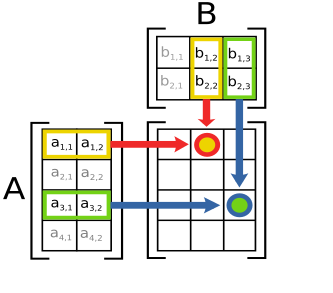

Where no CPU has gone before
Peter Steinbach, September 13, 2018, Dresden, Germany
Preface
My employer
Our client
Disclaimer
These slides are open-source:
Deep Learning in bits and pieces

Heavy-Lifting inside CNNs
|  |
Convolutions | Matrix Operations |

A closer look
Convolutions
\(y_i = \sum_{n = 0}^{N_k} x_{i+/-n}*k_{i+/-n} \)Matrix Operations
\(AB=Y, y_{ij} = \sum_{k} a_{ik} * b_{kj} \)Common?
Dot Product Structure!
Where do CPUs come from ?
Low Latency Matters Most
GPUs for Deep Learning 1/2

GPUs for Deep Learning 2/2

Latency Hiding
The rest is history
Consequences on the market
Nvidia’s stock pricing in the last years
Benchmarks
Benchmarks … What for?
Executive to decide what to buy new hardware
Developer to compare framework performance
User wanting to e.g. classify images (fast/slow?)
fair benchmarks
(deep learning) applications try to solve a problem
model written in a particular software framework
running on particular hardware for training and/or inference
| Fix at least 2 of 3 from above! |
DawnBench
open-source and community driven
key requirement: reach fixed accuracy for training for fixed dataset
| data from 1 run only |
| submitter can choose model implementation |
| data inconsistent (K80 cloud-only, P100 bare-only) |
MLperf
open-source and community driven
industry support (AMD, Google, Intel, …)
goal: SPEC benchmark for Deep Learning
| data = best of 5 runs |
deeprace
usable benchmark with clear semver support
model code is fixed
ResNet with Keras+TensorFlow or just TensorFlow (code adopted from official repos)
single and multi-gpu training (distributed planned)
data will be open-sourced once I find a sponsor
Deeprace Results
Hardware
local cluster: Taurus at Technical University Dresden
single GPU node:
Intel Xeon E5-2680 v3 12c
64GB RAM
4x Nvidia Tesla K80 GPU
local servers (Nvidia Titan Xp, Nvidia Tesla P100)
Using ResNet on CIFAR10
Containers!
singularity container = Keras 2.1.5 + TensorFlow 1.3.0
Short runs only
single-GPU training
cloud?

GCE, single K80 instance, 1vCPU, 6GB RAM, 10GB disk
framework differences?
multi-GPU training
Summary
deep learning requires a lot of parallel compute power
GPUs et al are indispensible tools
hardware/framework landscape diverse
solid benchmarks save time & money